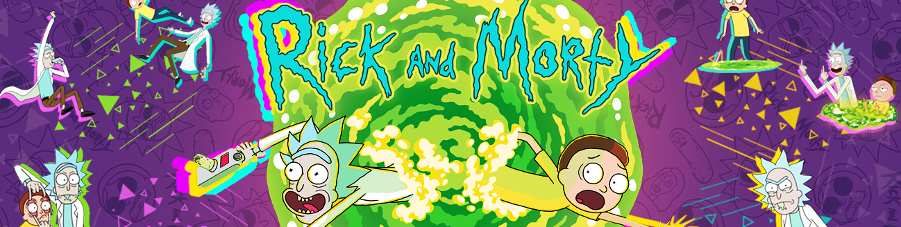

Rick and Morty
Rick and Morty is an American adult animated science-fiction sitcom created by Justin Roiland and Dan Harmon for Cartoon Network's nighttime programming block Adult Swim. The series follows the misadventures of cynical mad scientist Rick Sanchez and his good-hearted but fretful grandson Morty Smith, who split their time between domestic life and interdimensional adventures.
Roiland voices the eponymous characters, with Chris Parnell, Spencer Grammer, and Sarah Chalke voicing the rest of Rick and Morty's family. The series originated from an animated short parody film of Back to the Future created by Roiland for Channel 101, a short-film festival cofounded by Harmon. Since its debut, the series has received critical acclaim for its originality, creativity and humor. They have won two Primetime Emmy Awards for Outstanding Animated Program.
The fifth season premiered on June 20, 2021, and consisted of ten episodes. A sixth season was confirmed as part of a long-term deal in May 2018 that ordered 70 new episodes over an unspecified number of seasons,and is set to premiere on September 4, 2022.
Premise and main characters
The show revolves around the adventures of the members of the Smith household, which consists of parents Jerry and Beth, their children Summer and Morty, and Beth's father, Rick Sanchez, who lives with them as a guest. According to Justin Roiland, the family lives outside of Seattle, Washington.[4] The adventures of Rick and Morty, however, take place across an infinite number of realities, with the characters travelling to other planets and dimensions through portals and Rick's flying car.
Rick is an eccentric and alcoholic mad scientist, who eschews many ordinary conventions such as school, marriage, love, and family. He frequently goes on adventures with his 14-year-old grandson, Morty, a kind-hearted but easily distressed boy, whose naïve but grounded moral compass plays counterpoint to Rick's Machiavellian ego. Morty's 17-year-old sister, Summer, is a more conventional teenager who worries about improving her status among her peers and sometimes follows Rick and Morty on their adventures. The kids' mother, Beth, is a generally level-headed person and assertive force in the household, though self-conscious about her professional role as a horse surgeon. She is dissatisfied with her marriage to Jerry, a simple-minded and insecure person, who disapproves of Rick's influence over his family.
Different versions of the characters inhabit other dimensions throughout the show's multiverse and their personal characteristics can vary from one reality to another. The show's original Rick identifies himself as "Rick Sanchez of Earth Dimension C-137", in reference to his original universe, but this does not necessarily apply to every other member of the Smith household. For instance, in the first-season episode "Rick Potion #9", after turning the entire world population into monsters, Rick and Morty move to a different dimension, leaving Summer, Beth and Jerry behind.
Creators Dan Harmon and Justin Roiland
Rick and Morty was created by Justin Roiland and Dan Harmon. The duo first met at Channel 101, a non-profit monthly short film festival in Los Angeles co-founded by Harmon. At Channel 101, participants submit a short film in the format of a pilot, and a live audience decides which pilots continue as a series. Roiland, then a producer on reality programming, began submitting content to the festival a year after its launch, in 2004. His pilots typically consisted of shock value—"sick and twisted" elements that received a confused reaction from the audience.Nevertheless, Harmon took a liking to his humor and the two began collaborating. In 2006, Roiland was fired from working on a television series he regarded as intensely creatively stifling, and funneled his creative energies into creating a webisode for Channel 101. The result was The Real Animated Adventures of Doc and Mharti, an animated short starring parodies of Doc Brown and Marty McFly, characters from the Back to the Future film trilogy.In the short, which Harmon would dub "a bastardization, a pornographic vandalization", Doc Smith urges Mharti that the solution to all of his problems is to give him oral sex. The audience reacted to it wildly, and Roiland began creating more shorts involving the characters, which soon evolved beyond his original intentions and their obvious origin within the film from which it was culled. Harmon would later create and produce Community, an NBC sitcom, while Roiland would work primarily in voice acting for Disney's Fish Hooks and Cartoon Network's Adventure Time.